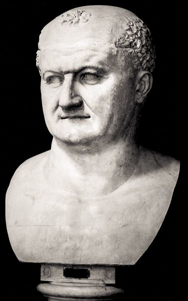
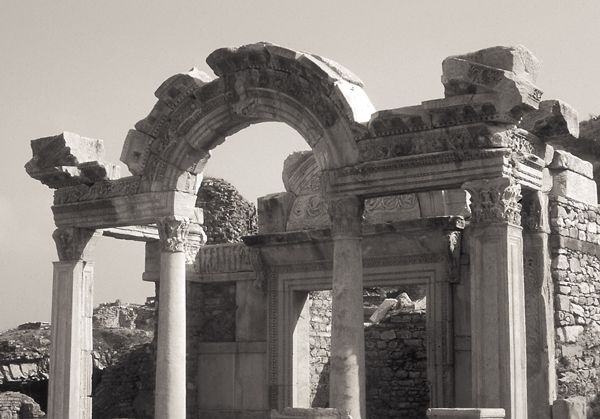
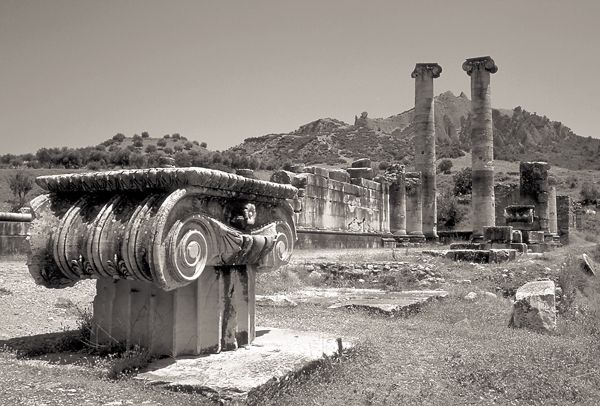
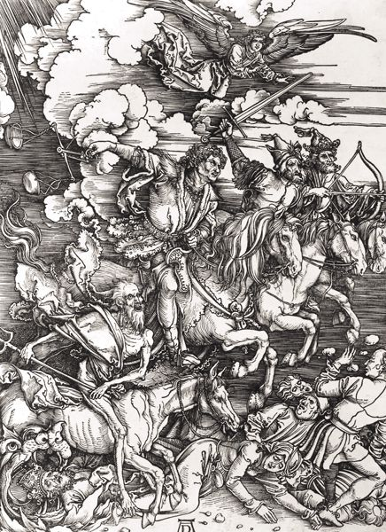

Perhaps no NT document simultaneously engages the imagination of its readers and frustrates their understanding as much as Revelation, the last book in the canon. In its pages one encounters vivid descriptions of fantastic creatures, including heavenly beings who are “full of eyes in front and behind, each with six wings”; a red dragon with seven heads, ten horns, and seven crowns; a beast rising from the sea who is part leopard, part bear, and part lion; and white, red, black, and pale green horses whose riders bring slaughter, destruction, famine, and pestilence to the earth. No shades of gray and brown dull these scenes, which are splashed with vivid colors — red, white, black, green, purple, blue, and gold. Cities, buildings, and thrones are made of precious jewels and metals, including sapphires, amethysts, emeralds, pearls, gold, and bronze. Everything seems to be counted and numbered: 144,000 people are “sealed out of every tribe of the people of Israel”; “thousands of thousands” sing to the Lamb; four living creatures circle the heavenly throne; four angels stand at the four corners of the earth; seven angels blow seven trumpets and pour out seven bowls of wrath; “the number of the beast is 666”; the heavenly city has twelve gates, is guarded by twelve angels, and is built on twelve foundations. And finally, the scenes of the book are marked by a constant din: unceasing singing, including choruses of praise, laments, and dirges, blowing of trumpets, crashes of thunders, loud cries, and constant prayers. No book is quite so intense, vivid, full of material to engage the senses — and enigmatic to its readers. Its mysterious puzzles have opened the floodgates for all sorts of imaginative and fanciful interpretations, some that stretch the imagination far beyond anything found in the book itself. As G. K. Chesterton once wrote, “Though St. John the Evangelist saw many strange monsters in his vision, he saw no creature so wild as one of his own commentators.”1
But the exotic features of the book of Revelation are less responsible for outlandish interpretations of it than are the mistaken expectations so often brought to it by its modern readers. Because commentators past and present have assumed that their own experience and contemporary events of their world will unlock its secrets, Revelation has been interpreted in light of everything from the Reformation to Hitler, atomic weapons, and the European Union. Ironically, however, the more commentators have sought to make the book relevant by applying its prophecies to their own times, places, and situations, the more they have missed the paths that lead to genuine understanding and appreciation of the power of this mysterious book. Attention to its historical context, social and religious milieu, and literary genre sheds considerable light on its form, content, and function and so clears the way for us to hear the warning of the risen Jesus: “Let anyone who has an ear listen to what the Spirit is saying to the churches” (2:7, 11, 17, 29; 3:6, 13, 22).
Revelation has characteristics of three genres: letter, prophecy, and apocalypse. As we will see, it has both structural traits and substantive similarities with each of them. But despite these similarities, it is not a perfect specimen of any of them. Its uniqueness lies not only in its combination of these genres but also in the adaptation of each to serve the author’s purposes.
24.1.1. Revelation as Circular Letter
Like other letters in the NT, Revelation has a prescript naming its author and addressees, an opening greeting (1:4–6), and a postscript (22:21). But the similarities go beyond structural markers. Of all the NT documents, the letters can most transparently be shaped by the particular needs or concrete situations of their intended readers and can address them most specifically. That Revelation is a letter suggests that it deals with concerns or problems arising from the readers’ historical circumstances, that the author is fully aware of those circumstances, and that he addresses himself to them with prophetic wisdom and pastoral counsel. The recipients of this circular letter are “the seven churches that are in Asia” (1:4), and John incorporates into his letter a specific message to each of these churches (chs. 2–3). Some of these churches (Ephesus, Laodicea) are referred to elsewhere in the NT, and others (Smyrna, Philadelphia) are known to us from the writings of early church authors such as Ignatius. Revelation was likely intended also for other Christian congregations in Asia Minor, of whom these seven were representative. John may have deliberately cast his book in the form of a letter in order to place it within the early Christian tradition of letter-writing. It follows that Revelation is to be read with the same sorts of historical and contextual sensitivities and questions that guide our reading of the letters of Paul, John, and Peter. Revelation was written first to address the concerns and needs of its first-century readers.
The island of Patmos (Nicholas Wolterstorff)
24.1.2. Revelation as Christian Prophecy
The author of Revelation also refers to his writing as a prophecy, thus placing it within the prophetic tradition of the Old and New Testaments (1:3; 22:6–7, 18–19). At the outset of the Revelation, we read this benediction: “Blessed is the one who reads the words of the prophecy, and blessed are those who hear and who keep what is written in it; for the time is near” (1:3). Two points are of significance here. First, the command to “read” and the reference to “hearers” indicate that the context in which the book was to be read was the gathering of Christians for worship, where the Scriptures and letters from apostles or their delegates were read and where prophecies were uttered (cf. 1 Corinthians 12–14; 1 John 4:1–7). Second, the author of the Revelation warns that the words of the book are to be kept. While it is a book that discloses and prophesies, it is above all a book that, like the writings and words of all the prophets, intends to admonish, correct, and encourage its readers. It calls for repentance, obedience, faithfulness, and perseverance. This is not a code needing to be cracked; it is proclamation that needs to be heard and obeyed.
24.1.3. Revelation as Apocalypse
The book of Revelation also belongs to a genre of ancient Jewish and Jewish Christian literature designated by modern scholars as apocalyptic literature. The Greek word apokalypsis, meaning disclosure or revelation, is found in the opening words of Revelation: “The revelation of Jesus Christ” (1:1) and provides the basis of both names of the book: either the English translation of apokalypsis, the Revelation, or a transliteration of the Greek word, the Apocalypse.
The modern term apocalyptic is applied by modern scholars to a number of literary works dating from about 200 BCE to 200 CE. These works have in common a similar worldview, known as apocalypticism, which generally views the world in a radically dualistic framework that is often embodied in the conflict between God and his angels, on the one hand, and the devil and demons on the other. Because apocalypticism assumes conflict of cosmic dimensions, it also hopes for imminent divine intervention to deliver the faithful. Such divine intervention, it is typically predicted, will produce a drastic change in the situation of the world and inaugurate the resurrection of the dead and the final judgment, which will determine the destinies of all persons. In spite, then, of the suffering and ills of the present life, apocalypticism expects that God will vindicate his faithful saints, punish the disobedient and apostate, and triumph over all powers of evil. Although elements of apocalypticism can also be found in the teachings of Jesus, Paul, and other figures of the NT, none of them left behind a written apocalypse.
An apocalypse is a literary work, typically a prose narrative in the first person, in which the narrator records a series of revelations received through either visions or journeys to heaven or both. These experiences disclose transcendent realities to the “seer.” The secrets that are made known typically take the form either of a historical narrative leading to the present and foreshadowing God’s assured future salvation, or of heavenly mysteries currently unavailable to human beings. Apocalypses tend also to use symbolism of numbers, animals, and other figures that must be interpreted for the seer. The seer is guided by a heavenly escort, usually an angel, who serves as interpreter of the visions and experiences.
Revelation shares many of these features with Jewish writings such as 2 Baruch, 4 Ezra, and 1 Enoch and with early Christian writings such as the Shepherd of Hermas. Yet even though apocalypses have certain features in common, it should not be supposed that a simple template existed for the writing of an apocalypse. Not all apocalypses have all the traits generally deemed common to “apocalyptic literature.” Revelation, in fact, manifests features that are both shared by and different from other apocalypses.
24.1.3.1. Pseudonymity
A striking instance of one of the distinctive features of Revelation is the author’s presentation of himself simply as “John.” As noted above, the human “seer” of the apocalypses typically writes in the first person. But in Jewish apocalypses the author always writes under a pseudonym, presenting himself as a worthy ancient figure such as Adam, Abraham, Moses, Enoch, or Ezra. Christians also adopted the strategy of pseudonymous writing, and Christian apocalypses appeared under the names of ancient prophets, such as Isaiah, and of the apostles, including Peter, Thomas, and Paul. The purpose of pseudonymous writing seems to have been twofold. First, it allowed otherwise unknown authors to claim the authority of a revered religious figure for their work and so to gain a hearing for it. Second, writing under the name of a figure from the distant past allowed the actual author to write of contemporary events under the guise of predictive prophecy, since from the vantage point of the fictitious author those events lay far in the future. Pseudonymity appears to have been primarily a literary technique, and not one meant to deliberately deceive its readers.
Revelation, however, is not pseudonymous. The author names himself as “John,” and the authority of his writing depends to some extent on the relationship he has with the recipients of the document. His self-portrait — “I, John, your brother who share with you in Jesus the persecution, the kingdom, and the patient endurance” (1:9) — points to his knowledge of their situations and his affiliation with them in their trials. Moreover, in keeping with the early Christian movement, John demonstrates a lively sense of his own prophetic commission and authority (1:1, 4, 9–11, 19; 10:8–11; 22:9). It may well be that this strong prophetic consciousness supplied John with the motivation to write under his own name rather than the name of an ancient figure.
24.1.3.2. Symbolism
Surely the most noticeable aspect of the Revelation, which it shares to some extent with other apocalyptic literature, is its vivid symbolic imagery. Colors, numbers, animals of all sorts, artifacts such as lampstands and buildings, and plants and trees all carry symbolic connotations. But it is crucial to see that not all the imagery and symbols function in exactly the same way. The symbolism of Revelation varies. Sometimes it is explained by the author; sometimes stock figures and imagery of biblical and apocalyptic literature are employed; sometimes the details are there merely to heighten the drama and sensory impact of the work.
A common but erroneous reading of Revelation flattens all the imagery into code that must be deciphered by lining up the “symbol” in the book with an event, person, or reality in history, whether past, present, or future. Once deciphered, the imagery itself becomes dispensable. To be sure, some of the imagery refers to historical realities in the first-century author’s and readers’ world. For example, the author pictures a woman seated simultaneously on “many waters” and on a “scarlet beast that was full of blasphemous names, and it had seven heads and ten horns.” On her forehead is the name “Babylon” (17:1–6). Each item in this picture represents ancient Rome in some way. Rome was known in all the world for its command of the seas (the “many waters”), “blasphemous names” refers to the deification and worship of emperors, and Rome was identified in various ancient Jewish and Christian sources by the name of the ancient enemy of the people of God, Babylon. Finally, the interpreting angel tells the seer that “the seven heads are seven mountains” (17:9), and the seven hills on which Rome was built were well known. The author of Revelation intends for the reader to identify the woman seated on the beast with Rome; he does not conceal Rome in cryptic code but describes it with symbols that quickly point to Rome. The symbols do not conceal; they reveal. The images of Rome as a beast, a harlot, and the fallen city of Babylon reveal something of the fluidity of the imagery of Revelation, which, like a kaleidoscope, can be constantly varied to give its readers ever new views. And the cumulative force of these symbols also guide the reader’s understanding of the symbolism, even though Rome is not explicitly named.
At other places, the angel interprets the symbol for the seer, who in turn gives the reader that interpretation in written form. An opening vision of one “like a Son of man” amid seven gold lampstands holding seven stars in his hand (1:13–16) is immediately interpreted: “The seven stars are the angels of the seven churches, and the seven lampstands are the seven churches” (1:20). Later, four horses are described and then interpreted as conquest, slaughter, famine, and death (ch. 6). The great red dragon of ch. 12 is explicitly called “that ancient serpent, who is called the devil and Satan, the deceiver of the whole world.”
But other symbolism in Revelation is more general in nature. Colors often have symbolic value. White conveys righteousness or purity, gold represents great value, red indicates blood and hence destruction and death, and purple is the color of royalty. That God and the Lamb are pictured as seated or standing on thrones signifies sovereignty and dominion, particularly in the political realm. The depiction of all the creatures who continually sing, pray, and prostrate themselves around the throne presents God and the Lamb as worthy of worship. The court of heaven (4:2) is also pictured as a synagogue in which a scroll is read (ch. 5), a temple with an altar on which incense is offered (8:3), and a law court from which the Accuser is thrown out (12:10). Just as one reality can be pictured by a number of images and symbols, so too any one symbol can carry rich and multiple meanings.
The numbers in Revelation are also highly symbolic. As a number associated with heavenly or divine realities, seven plays an important role in the book: there are seven angels, seven spirits, and three sets of seven judgments (trumpets, seals, and bowls) and the Lamb has seven eyes. Duration of time is often measured in increments of seven, including 3½, or in increments of ten (e.g., ten days or one thousand years). Four is the number of the corners of the earth, and the heavenly city is built “four square.” According to ch. 7, the number of those sealed is 144,000, derived by multiplying 12 × 12 × 1000, which indicates the great number (a countless crowd according to v. 9) of the people of God. The formulaic and repetitive use of numbers underscores their symbolic function.
Some of the imagery in Revelation serves primarily to add to the detail and vividness of the descriptions. The seer’s attempts to put into words his vision of God on the heavenly throne yields this description: “And the one seated there looks like jasper and carnelian, and around the throne is a rainbow that looks like an emerald . . . and in front of the throne there is something like a sea of glass, like crystal” (4:3, 6). Only a stunning lack of imagination would miss the evocative appeal of such imagery. Similarly, the description of judgment and catastrophe contained in the sixth seal draws on imagery from OT prophets (Isa 13:10; 50:3; Joel 2:10): “the sun became black as sackcloth, the full moon became like blood, and the stars of the sky fell to the earth as the fig tree drops its winter fruit” (6:12). Such vivid language intends to warn of the dire consequences of judgment, not to predict the literal collapse of the physical world. A mighty angel is pictured as “coming down from heaven, wrapped in a cloud, with a rainbow over his head; his face was like the sun, and his legs like pillars of fire” (10:1). This evocative description portrays the power and glory of God’s designated messenger in a medley of OT imagery. A tremendous earthquake (16:17–21) portends the fall of Babylon. But so do the images of Babylon as a harlot who is stripped, devoured, and burned by the beast (17:16) and of Babylon as a city that is besieged, sacked, and leveled by an invading army (ch. 18). These various descriptions of the destruction of Babylon offer the reader insight into the nature of Rome and its great power, while at the same time foreseeing its complete judgment and punishment.
Unquestionably, however, the most common interpretative error in reading the symbolism of Revelation is to confuse the symbols of the book with its message. The symbols are not the message; they carry and embody the message. John was not projecting and predicting a time when one by one these symbols would “come to life” and be realized in historical events. He was not predicting such a time because he wrote to awaken and shape the moral and religious imagination of Christians of his own day. The symbolism is meant to stimulate these Christians to see the world as it truly is, not to veil it from their sight until some future generation should discover what twenty centuries of readers had missed all along. But it is equally a mistake to read the symbolism, as some have done, as “timeless” representations of the eternal struggle between good and evil. Again, John wrote a prophetic word to address the lives of Christians of his own time and place. To transmute John’s descriptions of the difficulties of their existence into vague “timeless symbols” would devalue their own suffering and struggles, and render too remote the real threat posed by the deceitful allure and power of Rome.
Put differently, the visions and heavenly journeys described in Revelation have as their main content not so much the heavenly world or the future. Rather, the main content of those visions consists of the world of the Roman Empire and the Christians who inhabited it as seen from a vantage point that understands all things in light of God’s sovereignty, especially as manifested through the work of Jesus, the Lamb. The book of Revelation makes quite clear that its readers need a heavenly perspective from which to understand fully their circumstances and the threat of the world around them. Similarly, its readers need an understanding of the future in order to be reminded of God’s sovereign superintendence of the matters of the world. By showing his readers their present world as it looks from the vantage point of God’s throne and God’s future, the prophet John hopes to transform their understanding of it.
24.1.3.3. The Use of the Old Testament
Revelation, like many other apocalypses, draws many of its motifs and much of its primary symbolism, particularly for salvation and judgment, from the OT. Scenes of heavenly worship, described along the lines of worship in the temple, feature altars, censers, incense, songs, and prayers (5:8; 8:3). A primary image for the salvation of God’s people is the exodus from Egypt, complete with accompanying plagues of hail, water turning to blood, darkness, and locusts (8:7–12; 9:2, cf. Exod 7:17; 9:18; 10:4, 21). John’s description of God’s throne recalls the theophany on Mount Sinai, with accompanying lightning and thunder (Exod 19:16–18; Ezek 1:13). From Daniel, John draws descriptions of the kingdoms of the earth in the form of various bizarre beasts, as well as the portrayal of Jesus as the Son of man, and the image of the sovereign God seated on the heavenly throne. The four winged creatures around the throne have characteristics drawn from the cherubim of both Ezekiel 1 and Isaiah 6, and their hymns reverberate with the “holy, holy, holy” of Isaiah’s vision. John’s description of the fall of “Babylon, the great” applies the prophetic denunciations of Babylon in Isaiah and Jeremiah and the downfall of Tyre recorded in Ezekiel to his own day. The fates of ancient Babylon and Tyre foreshadow the assured doom of the “Babylon” known to John’s readers — Rome.
In light of its frequent and subtle use of and dependence on the OT, Revelation’s lack of direct OT quotation stands out all the more. There is little attempt to correlate the events and prophecies of Revelation with what was spoken by the prophets of the OT. The primary method by which Revelation is correlated with the OT is not announcement of prophecy’s fulfillment but creative reworking of prophecy’s imagery of judgment and salvation and application of that imagery to the situation of John and his readers. By using a medley of OT imagery and themes, and particularly those associated with salvation and judgment, John creates the dense and evocative texture of Revelation. By recalling for his readers the salvation and judgment of God in the past and prophesying it for the future, he also assures readers of God’s sovereignty and of the ultimate limits and certain end of all human power and exhorts them to faithful discipleship.
24.1.3.4. The Interpretation of Apocalyptic Eschatology
As a species of apocalyptic literature, the book of Revelation is often understood to predict the “end” of all things. But, as we have already noted, Revelation often defies the expectations of its readers. To be sure, many of the primary motifs used in Revelation can be found in apocalypticism: the coming kingdom of God, the messianic woes that will precede or accompany the arrival of the kingdom, the final adversary, the heavenly battle and the defeat of evil, final judgment, and the ultimate re-creation of the world, often pictured as a return to Paradise. Revelation does not order these logically and neatly into an end-time scenario, but recasts apocalyptic eschatology in light of John’s Christian theology and immediate pastoral concerns. It is striking, for example, that such typical phrases as “in the latter days” or “in the last days” are missing from the book, as are elaborate timetables leading to “the end.” In fact, the phrase “the end of the world” does not appear at all.
John has reinterpreted the eschatological timetable in light of his Christian conviction that the determinative and central act in God’s redemptive plan is the death and resurrection of Jesus Christ. He thus relocates the definitive conflict between good and evil, God and Satan, and the church and world from the future to the cross of Christ. This theology is even embedded in the structure of the book. Before John relates any of the visions of judgment and salvation that comprise the largest portion of the book (chs. 6–21), he devotes two chapters to establishing the starting point for all that follows: God is seated on the throne of heaven; the sacrificed Lamb, who is also the Lion of Judah, the Root of David, is seated with God; and only that Lamb can open the scroll that contains the judgments and salvation of God.
24.1.3.5. Setting and Function
Apocalyptic literature is often assumed to have arisen among marginalized groups and in times of crisis, in contexts in which suffering and persecution were realities of everyday life. It follows that the function of this literature was to offer consolation, comfort, and hope to those who were experiencing religious persecution or social alienation. Daniel, for example, seems to have taken shape during the Maccabean crisis to urge faithfulness to the law of God during the persecutions of Antiochus IV Epiphanes. In this vein, Revelation is replete with exhortations to faithfulness, obedience, and endurance such as “Here is a call for the endurance of the saints, those who keep the commandments of God and hold fast to the faith of Jesus” (e.g., 1:9; 2:2–3, 13, 19; 3:10; 13:10; 14:12). These summons to faithfulness suggest a historical situation in which endurance was needed — but difficult.
Such a construal of the setting and function of apocalyptic literature and of the book of Revelation explains its origins to a large degree but does not completely account for the ways in which apocalyptic literature and convictions could be adapted by various other groups. Moreover, the view that apocalyptic literature intends to offer its readers comfort and assurance does not exhaust what Revelation is up to, as some of the edicts of chs. 2–3 amply attest. In these chapters, laxness, self-sufficiency, syncretism, and materialism are named as threats to the faithfulness of the churches. The problem was not that these Christians were being persecuted for their faith by the government or ostracized by their neighbors, but that they had made too cozy a peace with the prevailing cultural and political ethos. That is the crisis in which they found themselves, although they did not see it. They did not need comfort, but rather to be jolted, to have their eyes opened.
The visions of Revelation depict in graphic and fantastic ways the reasons not only that endurance was needed, but also that the dulled sensitivities of Christians needed to be sharpened: the world in which first-century Christians lived was not always what it seemed, and there were real threats, both subtle and obvious, to holding steadfastly to faith in God. Revelation functions rather like a political cartoon, exaggerating certain features of its subject and drawing in bold, stark strokes to make its point. Like many political cartoons, it protests what it sees and is open to being misunderstood, disbelieved, or ignored. Its power to persuade lies, to some extent, in the eye of the beholder, who chooses whether to allow the picture to become the prism through which the world is viewed. And just as political cartoons are often unintelligible to subsequent generations that lack knowledge of the context in which those cartoons arose, so too the book of Revelation often seems merely like an enormous and perplexing puzzle to subsequent generations of readers. Not surprisingly, knowledge of the first-century historical context serves to further illumine Revelation.
24.2. THE HISTORICAL CONTEXT OF THE BOOK OF REVELATION
24.2.1. Roman Military Might
The NT was written, and all the events and persons found within it took place, within the far-flung borders of the Roman Empire. There were undeniable benefits for those who lived under the so-called pax Romana, the “Roman peace,” which to a large extent united the Mediterranean world economically, politically, and culturally and brought a relative measure of peace and stability to its inhabitants. Yet in spite of the positive contributions of Roman rule to the ancient world and even to the spread of the early Christian movement, the NT authors often manifest a wary attitude toward Roman political dominion.
The author of Revelation is more than wary. His book contains the most sustained critique of Roman power in the NT. As the dominant military power of its time, Rome resembled a grotesque and formidable beast, seeking to devour and kill (ch. 13). Military victories brought wealth, power, and influence to Rome, which was able through its military might to assert political and economic dominance. Rome is also portrayed as a harlot, trying to seduce and corrupt the inhabitants of the “great city that rules over the kings of the earth” (17:18). The images of Rome as a beast and a woman are brought together in ch. 17, where the woman is pictured riding on the back of the beast. In other words, the corrupting influence of Rome has gained its power and made its way on the back of its military conquests.
But in spite of its military might and reasonable tolerance of the diversity within its borders, Rome was not always able to control its subjects and keep chaos at bay. Although certain periods of the first century were rather stable politically, the middle portion was marked by considerable turmoil, particularly during the catastrophic reigns of Gaius “Caligula” (37–41 CE) and Nero (54–68). As we shall see, the actions of these emperors bear on the interpretation of some of the more widely disputed symbolism of the book of Revelation.
24.2.2. Roman Economic Power
Rome’s “dominion over the kings of the earth” (17:18) naturally extended to the economic realm. Rome needed its provinces to supply food for its population and taxes to support its various projects of constructing buildings, roads, and fleets of ships for trade and travel and for its armies. It also imported, along with the basic necessities, vast quantities of luxury goods. Rome’s obsessive appetite for luxury goods is one of the causes of her condemnation: “The merchants of the earth have grown rich from the power of her luxury” (18:3). Rome’s imports included gold, silver, bronze, precious stones, pearls, fine linen, purple cloth, silk, exotic wood, ivory, marble, spices, wine, cattle, sheep, horses, and slaves (18:11–13). By listing slaves, “human lives,” last in the list of imports, John graphically and ironically points out the extent of Rome’s depravity. While “human lives” ought to be valued above all, they are valued least by Rome, whose trade places them on the same level as gold, silk, and cattle.
24.2.3. Roman Emperors and the Imperial Cult
One of the ways in which the corrupting influence of Rome was demonstrated most vividly was through its propagation of the state-sanctioned cults of the deities of the empire and its tolerance of the cult of the emperor. The phenomenon of emperor veneration or, more precisely, of paying homage or giving divine honors to the emperor or his “guardian spirit,” began with Augustus and continued into the second century, thus encompassing the time during which the NT documents were composed. Even so, the imperial cult was always more popular in the provinces than in Rome. The imperial cult was actively promoted, particularly in Asia Minor, by the local elites. Generally, when an emperor was considered “divine,” it was because of his alleged apotheosis or “deification” after death, the evidence of which was the ascent of his soul to the heavens. The earliest emperors, including Augustus, Tiberius, and Claudius, explicitly refused to allow temples and statues to be built in their honor and rejected other forms of honor that would signify their deification while they were alive. But the populace of the provinces often had no such scruples, and there is evidence of temples and statues being constructed in honor of the emperors and acts of venerating them or their guardian spirits even while they were living.

Bust of Emperor Vespasian (Ewing Galloway, N.Y.)
The tradition that only dead emperors were deified was ignored by Caligula, the emperor after Tiberius. Dressing in the garb of the deities, Caligula gladly welcomed and even demanded divine honors, such as the construction of temples to him. Such a course was bound to lead to conflict with the monotheistic Jewish and Christian faiths. When some Greeks in Alexandria tried to set up images of Caligula in the synagogues, the famous Jewish writer and apologist Philo wrote a long treatise and led a delegation of Jews to Caligula to complain about the impossibility of worshiping the emperor. Caligula also tried to have a large image of himself set up in the Jerusalem temple, but the order was never carried out. Although Caligula’s demands never rose to the level of demanding veneration by all his subjects on penalty of death, his actions recalled the desecration of the temple by Antiochus Epiphanes, referred to cryptically in Daniel as “the abomination that desolates” (9:27; 11:31; 12:11).
Nero’s infamy as a persecutor of Christians is attested by the Roman historian Tacitus (Annals 15.38, 44). When fires swept through Rome, destroying much of the city, in 64–65 CE, it was rumored that Nero himself had set them. Tacitus comments that Nero needed a scapegoat and found it in the “notoriously depraved Christians,” whom he had tortured, crucified, burned alive, and thrown to wild beasts. Because Christians refused to honor the gods of the Roman state, they were deemed “antisocial” and “atheistic” — and Nero used these “crimes” to rationalize the torture and deaths of those who were willing to acknowledge their faith. According to tradition, it was under Nero’s persecution that both Peter and Paul were martyred. However, Nero’s persecution was localized, confined to Rome itself, and was not linked to Christian refusal to worship him. And yet, from about 65 on, Nero appeared on coins styled as Apollo, with the crown of the deified emperor and the title “divine” (divus), a provocative action to Christian and Jewish sensibilities.
Nero committed suicide in AD 68 when he learned that the Roman senate had declared him a “public enemy.” But apparently rumors arose that he had not died, had come back to life, or had actually escaped to the east, perhaps to the Parthians, and would return. These rumors became embodied in the myth of his return, which has come to be known as Nero redivivus (“Nero returning”). In fact, several imposters claiming to be Nero appeared in the course of the first century trying to capitalize on that expectation, and some garnered the support of the Parthian kings.
One of the most enigmatic of Revelation’s puzzles — the meaning of the number 666 — can be worked out with reference to Nero. John is using gematria, a technique in which each letter of the alphabet is assigned a numerical equivalent. The sum of the numerical values of the Greek word “beast” (thērion) is 666; hence, “the number of the beast . . . is 666” (13:18). But 666 is also “the number of its name” and “the number of a person” (Rev 13:17–18; 15:2). When Nero Caesar is written in Hebrew characters, their sum is 666, so that he is that person. Other descriptions of the beast recall the legends of Nero’s mysterious death and expected return. According to 13:3, “One of its heads seemed to have received a death blow, but its mortal wound had been healed,” a cryptic statement referring to the expectation that Nero would return and the empire would continue to exert its power and influence. Similarly, in 17:8 the beast is described as “the one who was, and is not, and is about to ascend.” This designation not only alludes to the myth of Nero’s death and return, but does so in a parody of the description of the eternal God as “the One who is and who was and who is to come” (1:4, 8; 4:8; 11:17; 16:5) and of the risen Christ as the one who “was dead” and is “alive forever and ever” (1:18). The beast with “seven heads” with “blasphemous names” on its heads evokes the coins issued by Roman emperors, including Nero, with their names and images and the title divus (divine) stamped upon them. John has refracted the portrait of the “beast” through the description and legends regarding Nero.
Modern ideas about the separation of “church” and “state” can mislead us about the nature of religion in ancient Rome and its relationship to the political and social realms. Religion was part of the ancient civil order, not something practiced alongside it or in addition to it. John portrays the far-reaching nature of Roman military, social, and economic power, embodied particularly in the person of the emperor, as finding its most sinister form in the imperial cult. But even so, John does not attack the practices associated with the imperial cult as blatant idol worship; the word “idolatry” does not appear in Revelation. This tacit recognition of the civic and political function of the imperial cult again points to the sweeping critique that John offers of the empire. The Roman quest for power by military strength, reflected in economic hegemony and insured by the social and political function of the state cults, was tantamount to blasphemy, to usurping the proper place of God (13:1). In light of the insatiable appetite of Rome for power and a consequent appetite for the necessary allegiance of its subjects, it is unavoidable that Christians will come into conflict with it again and again, even as they had under Nero and would under any sort of Nero redivivus.
24.2.4. The Date of the Book
Traditionally the Apocalypse has been assigned to the later years of the reign of the Roman emperor Domitian (81–96). Not only does this date agree with the statements of the earliest witnesses, including Irenaeus, Tertullian, and Eusebius, but it also makes sense of the situation of those addressed in the Apocalypse. Domitian was known as a second Nero, a self-glorifying tyrant, who demanded that he be addressed as “our Lord and God,” an inclusive designation that heightened its offense to Christians. Along with Caligula and Nero, Domitian was apparently one of the emperors who accepted and even encouraged divine honors during his lifetime and not merely following his death. Yet there is little evidence that Domitian was responsible for systematic or widespread persecution of Christians because of refusal to worship him or offer sacrifice or incense in his name. We have no corroborating evidence of widespread martyrdom of Christians at this time, but neither is widespread martyrdom presupposed in the book of Revelation. The church of Smyrna, for example, has experienced the death of only one martyr (2:13).
Domitian’s reputation no doubt elicited memories of Caligula and Nero, both self-glorifying enemies of the people of God. However, regardless of the reigning emperor, John viewed the Roman Empire itself as the blasphemous beast, the great harlot, and the city doomed for destruction. The actions of certain emperors served to sharpen this portrait. But it did not take a particularly “bad” emperor to evoke John’s prophetic apocalypse any more than a “good” emperor would have caused him to revise his portrait of Rome. He wrote about the empire more than about any specific emperor. Given the historical circumstances and John’s literary technique and theological viewpoint, a date for the publication of Revelation under the emperor Domitian commends itself. Not only did Domitian claim the scandalous title “our Lord and God” for himself, but by the end of the first century Christianity was more widespread than it was during the time of Nero.
24.3. THE REVELATION OF JESUS CHRIST
24.3.1. Prologue: Visions of God and Christ (ch. 1)
The opening verses of Revelation actually give us a genealogy of its origin: it was given by God to Jesus Christ, who made it known to John through an angel, who in turn made it known to the servants of God. The Revelation concerns “what must take soon place,” with the Greek construction (dei genesthai) expressing the conviction that God’s purposes, as they are revealed in this book, will be accomplished. The various names and descriptions of God in the first chapter underscore that conviction. The eternal God is the one “who is, who was, and who will be.” God is described as the “Alpha and Omega,” the first and last letters of the Greek alphabet, that is, as the one who holds not only the beginning and end of all things but all that lies between as well. God is therefore “the Almighty.” Nine of the ten uses of this designation for God in the NT are found in Revelation. As one of the Septuagint’s translations of the Hebrew phrase meaning “the Lord of hosts,” the term stresses not so much God’s power as God’s supremacy over all things. Just as God made his name known to Moses before sending him to the Israelites in Egypt, so here too God reveals his name to John as the one who comes with salvation and judgment. In addition to the interpreting angel, the angels of God figure prominently in this book, not only as John’s guide on his heavenly journey, but as agents of God’s judgment and salvation.
The opening chapter also presents a vision of the risen Christ as “the faithful witness, the firstborn of the dead, and the ruler of the kings of the earth.” These descriptive phrases refer respectively to Jesus’ earthly life, resurrection, and present sovereignty, and each aspect becomes paradigmatic in some way for believers. Throughout Revelation Jesus will be held up as a model of faithful witness to God that the people of God are to emulate (cf. 1 Tim 6:13). Those who are faithful until the end can expect to be raised to life and reign with God and the Lamb. They can be assured that although the “kings of the earth” seem overwhelmingly powerful, as the “firstborn of the dead,” Jesus indeed is “King of kings and Lord of lords” (19:16).
Christ appears to John as “one like a son of man,” a clear allusion to Daniel 7. But the subsequent description of him as having hair as white as snow, eyes of fire, feet of bronze, and a voice like many waters combines elements of both the “Ancient of Days” and the “son of man” from Daniel. Here the risen Jesus is also described as “the First and the Last,” a title that appears again in 2:8 and 22:13, but is used elsewhere in the Revelation (1:8; 21:6–8) and in the OT for God. The implications are clear: the supremacy and sovereignty ascribed to the eternal God can also be assigned to the one who “was dead . . . and is alive forever and ever.” Reducing this vision of Jesus to prose runs the risk of diluting its awe-inspiring majesty, which the reader can sense to some extent by identifying with John’s response: upon seeing the risen Jesus, John is stricken with terror, “and fell at his feet as though dead” (1:17). This powerful and majestic figure then begins to issue proclamations to his churches, and commissions John to write them down.
John is introduced as one who has been banished to the island of Patmos, a punishment that was not necessarily unduly harsh and could even be voluntarily chosen. If Domitian’s successor followed usual custom, John might well have been granted amnesty on Domitian’s death. While “in the spirit,” John received a vision of the risen Christ and a commission to speak specifically of what he had seen. By now it should be clear that in recording the visions that he sees, John deliberately crafts his narratives with images and language redolent of the OT, allusions to his social, political, and religious milieu, and theological motifs drawn from apocalyptic literature.
24.3.2. The Risen Christ Speaks to His Church (chs. 2–3)
In chs. 2–3, the risen Jesus speaks to the seven churches of Asia Minor in the form of imperial edicts. By thus casting Jesus’ words, John underscores once more Jesus’ supremacy, especially with respect to competing sovereigns. In these edicts, which address the same issues in straightforward prose as the rest of the book does in apocalyptic language and imagery, John writes to sharpen his readers’ abilities to discern the perils posed to their faith by the syncretistic religious milieu and the social pressure to accommodate their ways of life to the dominant norms of their culture. Thus they are warned against association with the cults of pagan deities (2:6, 14–15, 20, 24) including the Roman gods and the imperial cult, as well as against materialism (3:17), waning faith (3:2–3), and failures to love God and neighbor (2:4–5).
John perceives the life of Christian discipleship as a spiritual struggle with ultimate consequences. In this struggle, some “conquer” and others fail. Seven times in chs. 2–3 Christians are exhorted to “conquer” (2:7, 11, 17, 26; 3:5, 12, 21), which is also paraphrased by admonitions to “endure” (2:2–3, 19; 13:10; 14:12) and to “keep,” which has multiple objects, including “what is written in this book” (1:3; 22:7, 9), “my works” (2:10), “my word” (3:8), and “the commandments” (12:17; 14:12). The depiction of the life of the church in martial imagery in chs. 2–3, where it is clearly metaphorical, suggests the metaphorical nature of the rest of the imagery of warfare and conquest in the book. Although the struggle that John describes is real, it is not military but has to do with faith and obedience. What the risen Jesus promises in the edicts of chs. 2–3 to those who “conquer” are the blessings of salvation.

Ruins of a second-century temple at Ephesus (Nicholas Wolterstorff)

The remains of the temple of Artemis in Sardis (Phoenix Data Systems, Neal and Joel Bierling)
Each of these gifts of salvation listed in chs. 2–3 is mentioned again a number of times in the visions of the final creation of the new heaven and the new earth in chs. 19–22. Those who are barred from the holy city are the cowardly, faithless, polluted, murderers, fornicators, sorcerers, idolaters, and liars (21:6–8) — precisely the sins against which Christians are warned in chs. 2–3 and which the rest of the world is accused of throughout the book (9:20–21; 21:7; 22:15). Those who are found guilty of them experience the second death rather than the blessings of eschatological salvation. The words of the risen Jesus in chs. 2–3 warn believers of the need for vigilance and faithfulness.
24.3.3. Visions of the Heavenly Throne Room (chs. 4–5)
The last of the seven edicts ends with the statement “To the one who conquers I will give a place with me on my throne, just as I myself conquered and sat down with my Father on his throne” (3:21). This verse serves as a pivot between chs. 2–3 and the visions of the heavenly throne room in chs. 4–5 and also gives the reason Jesus shares God’s throne: he has “conquered.” In his faithfulness he becomes a model for Christians. Just as the vision of the risen Jesus in ch. 1 introduces the edicts to the churches in chs. 2–3, so the visions of the heavenly throne room (chs. 4–5) introduce the visions of salvation and judgment that comprise most of the second part of the book. These are contained in the scroll sealed with seven seals (5:1), which only “the Lion of the tribe of Judah, the Root of David,” the Lamb who was slaughtered and now lives, is worthy to open. This scene indicates that God’s purposes in history, contained in the scroll, will be carried out through the agency of the risen Christ. Already presented in chs. 2–3 as Lord of the church, he now appears with God sovereign in all the world and so calls the world to repentance, obedience, and faith.
Not only are chs. 4–5 pivotal in the structure of the book, they dramatize the following foundational theological convictions of the Revelation:
• God is the transcendent, holy God, on whom all things in heaven and on earth depend, because he is the Creator (4:11) who also makes all things new. The world is not under the control of human or demonic powers, but is ruled by God. As sovereign, God steers the course of history toward his final victory over evil.
• That final victory is a matter of hope and expectation, but not only so: The decisive victory has already been won through the death and resurrection of Jesus, the Lamb who was slain yet lives and shares with God in ruling the universe.
• Worship, obedience, and honor are the only appropriate responses to God and to the Lamb.
The prophet John is taken up to heaven not so much to see heaven itself, but to see the entire universe from the standpoint of heaven, from the perspective of God’s sovereignty. This vision also lays the groundwork for understanding the transitory and sinister nature of the throne of the beast described in later scenes (13:2; 16:10). While the beast’s throne or sovereignty appears to be powerful and permanent, it cannot last, because it is but a weak and even demonic mockery of God’s eternal rule. Chs. 4–5 thus serve as both the structural and theological heart of the book.
24.3.4. Judgment and Salvation Inaugurated: Preliminary Visions of Judgment and Salvation (chs. 6–11)
After the visions of the heavenly thrones, the seven seals of the scroll begin to be opened. These seals contain alternating visions of judgment and salvation, which portend the certainty of God’s judgment and the promise of God’s salvation with a variety of images in kaleidoscopic fashion. The narrative serves not to unfold a predetermined timetable of events, but to warn of the certainty of judgment and to assure the faithful that nothing can separate them from God’s sovereign purposes for their salvation.
24.3.4.1. The Seven Seals and the Sealing of the 144,000 (6:1–8:5)
The first four seals, the famous “four horsemen of the apocalypse,” represent conquest or invasion, blood and warfare, famine, and death. Through these means God effects judgment on the earth. In the midst of such afflictions, the faithful experience persecution and are subject to martyrdom for the witness that they bore to the word of God (the fifth seal; 6:9–11). Understandably they cry to God for justice and vindication, but are told they must “rest a little longer” since the day of judgment has not yet come. The sixth seal then pictures, in typical apocalyptic imagery of earthquake, blackening sun, blood-red moon, falling stars, and disappearing land, sea, and sky, the judgment of “the kings of the earth and the magnates and the generals and the rich and the powerful” (6:15). In very brief compass, but in intense and horrific imagery, these seals present God’s judgments on “the inhabitants of the earth” and hold out the promise of God’s justice for those who are followers of the Lamb.
This promise is explicated more fully in the vision of the sealing of the 144,000, symbolic of their protection and future salvation (ch. 7), and the opening of the seventh seal, which brings a great silence during which the prayers of the saints are brought before God and the request for vindication is answered. The 144,000, later described as “first fruits for God and the Lamb” (14:4), are culled out of the twelve tribes of Israel, the ancient people of God, thus fulfilling certain eschatological hopes for the regathering of the twelve tribes of Israel. They are joined by a “great multitude that no one could count, from every nation, from all tribes and peoples and languages” (7:9), symbolizing the universal nature of the people of God drawn together in Christ. They have “the seal of the living God” (7:2) on their foreheads, later described as the name of God (9:4; 14:1; 22:4), of which the infamous “mark of the beast,” the name of the emperor, will be an obvious parody (13:16–18; 14:9–11; 20:4). These are the faithful worshipers of God who have not compromised their discipleship by veneration of the emperor or complicity with the empire’s standards and norms. Not surprisingly, the 144,000 are depicted as standing “before the throne of God,” worshiping him “day and night” (7:15). This is a vision of the salvation of the faithful, showing the continuity between their lives on earth and their future destiny. Here, as there, they are presented primarily as worshipers of the living God.

Albrecht Dürer, The Four Horsemen of the Apocalypse (National Gallery of Art, Washington, D.C.—Rosenwald Collection)
24.3.4.2. The Seven Trumpets (8:6–11:19)
The seven seals are followed by seven trumpets and two visions, which together recapitulate the seven seals by again presenting alternating visions of judgment and salvation. The judgments effected by the six trumpets, while destructive and horrendous, are limited and partial, lasting for set periods of time and affecting some of the earth and its inhabitants. The first four trumpets particularly describe events affecting the cosmos in ways reminiscent of the plagues of Egypt, thus suggesting that these plagues are part of the judgment that begins the new exodus, the redemption of God’s people from every tribe and nation. The depiction of the forces unleashed by the fifth trumpet borrows the description of the plague of locusts from the prophet Joel (2:4, 10) and from the plagues of Egypt, to describe a marauding, demonic host, led by an “angel” named Abaddon and Apollyon, names that mean death and destruction. The sixth trumpet unleashes four angels, two hundred million troops of cavalry, horses the color of fire, with smoke and fire coming from their mouths and tails that sting like serpents.
This stream of plague and destruction is not an end in itself. Just as the plagues of Egypt were directed against the Egyptians and designed to encourage Pharaoh to release the Israelites, so these plagues are directed only against those people “who do not have the seal of God on their foreheads” (9:4) to bring about their repentance and turn them from worshiping demons and idols to worship of the true God (9:20–21). Strange as it may seem, the purpose of these judgments is ultimately to bring people to know and worship God. That the plagues do not touch those who have God’s seal, those who have the name of the Lamb and his Father on their foreheads (14:1), means that they are not subject to God’s punishment. They are redeemed by God through the death and resurrection of Christ.
Even though there is a temporary delay of the final judgment (10:1–4), it will surely come (10:6–7; cf. 6:11–17). That judgment is depicted in the seventh trumpet with the acclamation of the eternal rule of God and his Messiah. Again, this series of seven ends with a scene of the worship of God, the ultimate goal not only of the book of Revelation, but also of God’s purposes for the world.
24.3.5. Judgment and Salvation Consummated: Visions of Final Salvation and Judgment (chs. 12–22)
By now it should be clear that the “revelation of Jesus Christ” promised in the opening verse of the book is not a static description of Jesus and his life and ministry. Instead, from the beginning of the book, that revelation has led to warnings about judgment, descriptions of conflict, prophecies of martyrdom, and the revealing of numerous enemies of the faithful, enemies who disobey God and persecute his witnesses. The revelation of Christ has created crisis and conflict in the world. For as God’s supreme disclosure of his purposes of salvation for the world, the revelation of Christ, by calling for and demanding faith, obedience, and worship, brings judgment to those who do not respond and salvation to those who do. This is an important vantage point from which to interpret the thrust of the book. For although the author of Revelation writes out of and in genuine times of crisis in his environment, his ultimate theological point is that God’s purposes in Christ inevitably come into, and indeed create, conflict with the purposes and designs of earthly powers and authorities who pursue their own power and goals without proper acknowledgment of the sovereignty of God. With ch. 12, the conflict intensifies, coming to its climax in the description of the conflict between a dragon and a woman and her newborn child.
It is not too much to claim that the book of Revelation is about true and false worship and that John wishes to force the choice between worship of the “beast” and worship of God and the Lamb. All of John’s visions stand in the service of this fundamental proclamation: “Fear God and give him glory, for the hour of his judgment has come; and worship him who made heaven and earth, the sea and the springs of water” (14:7). In chs. 12–14, this choice and the inevitable conflict are graphically and symbolically portrayed in some of Revelation’s best-known imagery. Culminating in a grand vision of the worship of God and the Lamb and the acclamation of their sovereignty, the visions of chs. 12–22 overlap to some extent with those of chs. 6–11. There are again alternating visions of judgment and salvation. But this time the narrative moves to its conclusion with the creation of the new heaven and the new earth, the redemption of all things, and the final victory of God and the Lamb.
24.3.5.1. The Woman, the Dragon, and the Two Beasts (12:1–13:18)
In these chapters we find a vivid description of the conflict between the messianic people on the one hand and the Roman Empire and the imperial priesthood on the other. There are five main characters:
• A pregnant woman “clothed with the sun” and wearing a “crown of twelve stars” (12:1–2) represents Israel about to give birth to her son, the Messiah.
• The woman’s son, described in the language of Psalm 2 as destined to rule all nations with a rod of iron, is the Messiah, Jesus.
• A great red dragon with seven heads, seven crowns, and ten horns, identified as “that ancient serpent . . . the devil and Satan, the deceiver of the whole world,” is defeated by the heavenly hosts. Thrown down to the earth, it pursues the woman and child. But the child is snatched to safety, and the woman is provided a place of refuge from the dragon’s onslaught.
• A beast rising out of the sea, with ten crowns and blasphemous names on its heads, one of which “seemed to have received a death blow, but its mortal wound had been healed.” As noted above, this description makes use of the Nero redivivus legend to depict not only the reigning emperor but, through him, the Roman Empire. The assertion that it received its power and authority from the dragon indicates the ultimately demonic character of Rome’s oppressive and self-aggrandizing power.
• A beast that comes from the earth and tries to make people venerate the first beast represents those who participate in the cult of the emperor, particularly in the eastern part of the empire where the seven churches of chs. 2–3 were located. “The mark of the beast” (13:17–18) is given to those who fall prey to the strictures of those who insist on veneration of the emperor as a condition for civil peace.
24.3.5.2. Visions of Judgment and Salvation (14:1–20)
A quick succession of scenes constitutes ch. 14. In contrast to those who admired and worshiped the beast (13:3–4), ch. 14 opens with another vision of the 144,000 who have been redeemed and are here described as worshiping God with a new song. Angelic heralds repeat the summons to worship God (14:6–7) and warn of the consequences for worshiping the beast (14:9–11). The Son of man, announcing that the time for the consummation of all things has come, calls for the harvest, an image for judgment but also often of salvation (14:14–20).
24.3.5.3. The Seven Bowls: The Completion of God’s Judgment (15:1–16:21)
The final judgment is described in the imagery of seven bowls of wrath poured out on the earth by seven angels (chs. 15–16). Again, interspersed with the account of these plagues are vignettes of the faithful worshiping God rather than the beast (15:2–4), singing “the song of Moses, the servant of God, and the song of the Lamb,” as they are gathered beside “the sea of glass.” Their hymns of praise recall the song of victory that Moses and the Israelites sang after their deliverance from Pharaoh and his troops at the Red Sea (Exodus 15). So now those who have conquered the dragon and the beasts by their faithfulness praise God for this new exodus and the redeeming Lamb of God.
The judgments of the bowls are poured out on the earth, but, in spite of the crescendo of destruction, the people of the earth do not repent (16:9, 11). In a parody of the drying up of the Red Sea, which allowed the children of Israel to escape their pursuers, the sixth angel pours out his bowl on the river Euphrates so that it dries up, allowing “the kings of the east,” Rome’s own vassal kings, to cross over, apparently to launch an assault on the great city, which leads to its destruction (cf. 17:15–18). The kings of earth gather at “Harmagedon,” a play on the name Megiddo, the site of several battles in the OT. While much has been made of the prediction of “Armageddon,” no battle bearing this name is actually described in the book of Revelation, and there is no further mention of it beyond this one cryptic reference to a place where the kings of the earth assemble.
24.3.5.4. The Judgment of Babylon (chs. 17:1–19:10)
The judgment of Babylon, already foreshadowed in 14:8, is not so much described as assumed and announced in the visions and laments of chs. 17–18. John first sees “Babylon” depicted as a great whore, guilty of impurity, fornication, of leading many others astray, and of being “drunk with the blood of the saints and the blood of the witnesses to Jesus” (17:6). Since sexual impurity is a biblical symbol for idolatry or forsaking God’s ways and commandments, the point is clearly that Babylon has been a tyrannical force not only in oppressing and ultimately killing those who withstood its power, but also of fostering worship of false gods. Particularly in view here are those who bore faithful witness to Jesus and lost their lives for it. The woman is seated on the seven-headed beast (ch. 13), whose ten horns indicate great power. After all, this woman is “the great city that rules over the kings of the earth” (17:18).
Although this beast that “rules over the kings of the earth,” makes war on the Lamb, the Lamb conquers, since he is “Lord of lords and King of kings, and those with him are called and chosen and faithful.” While the imagery here is military, depicting the Lamb as the victor in a war, two telling items point to its symbolic character: First, the victory of the Lamb has already been portrayed in ch. 5 as occurring through his death and resurrection. Second, the designation of those who accompany the Lamb makes it clear how their victory has been achieved: they are called, chosen, and faithful. Nothing is said of military prowess or armed victories. Rather, they are those who have borne faithful witness to Jesus.
The fall of Babylon is lamented on earth by the kings and merchants of the earth who profited from its power and wealth, but celebrated by the faithful with songs of praise to God for his just judgments and vindication of his saints (19:2). Once again, the vantage point from heaven differs radically from that of those on earth. The laments of the kings and merchants in ch. 18 make it clear that Babylon’s sin lay not only in its persecution of God’s saints but also in its obsessive and abusive appetite for luxury and its self-assurance that nothing could ever destroy it. Repeatedly the heavenly chorus sings, “In one hour your judgment has come” (18:10; 17, 19), indicating God’s ultimate sovereignty as well as the temporal and fleeting nature of all of Rome’s power, glory, and wealth.
24.3.6. The Victory of God (19:11–22:9)
Now, at last, attention shifts from the scenes of judgment, death, and destruction to four vignettes that together dramatize God’s great victory and final redemption of the world.
24.3.6.1. The Rider on the White Horse (19:11–21)
Jesus appears, not as a slain Lamb, but as a victorious rider on a white horse. Although he is said to “make war,” and is accompanied by the armies of heaven and equipped with a sharp sword, he is the only one who fights. This scene underscores his sovereignty: while the beast wore ten crowns, this rider wears “many diadems”; while the beast ruled “the kings of earth,” this rider bears the name “King of kings and Lord of lords” and is further described as Faithful, True, and the Word of God. He executes judgment in righteousness (19:11), a judgment described in rather gruesome detail (19:17–21), as the birds of the air are called to gorge themselves with the flesh of all those who had followed the now defeated beast. In a grim reversal, those who had feasted in luxury now find themselves as the food of birds. The two beasts, however, are thrown into the lake of fire.
24.3.6.2. The Final Defeat of Satan (20:1–10)
The beasts, tools of the great deceiver Satan, have been destroyed, but Satan’s final destruction is pictured in a separate scene. Here Satan’s character as a deceiver, “that ancient serpent,” the one who “deceived the nations” (20:3, 8, 10) through the beasts and the false prophet, is emphasized. This adversary of faith has nevertheless been resisted by those who gave their lives “for their testimony to Jesus and for the word of God,” and refused to worship the beast or receive his mark. They were not deceived by the promises held out by the empire or the demands to honor the emperor as the one who bestows peace and salvation. Their lives on earth were given over to God, and though on earth they met with death, they are raised to life, “blessed and holy,” and join Christ in his reign. Satan, however, finds his ultimate place not on a throne, but alongside the beast and the false prophet in the lake of fire. This is his final end; but in fact every scene in the book that portrays him in conflict with the Lamb ends in his being either defeated or thwarted in some way, thus showing the futility of his attempts to vanquish the Lamb or his followers.
24.3.6.3. The Judgment
In a terse presentation of final judgment, all the dead are judged according to their deeds, and all those whose names are not written in the “book of life” are also thrown into the lake of fire, as are also Death itself and Hades. This is the end of evil. The “book of life,” a feature of other apocalyptic writings (Dan 7:10; 1 En 90:20; 4 Ezra 6:20), has been referred to several times previously. It contains the names of those who belong to the lamb of God, who have persevered, and borne faithful witness, and have not worshiped the beast (3:5; 13:8; 17:8; 20:12, 15; 21:27).
24.3.6.4. The New Jerusalem (21:1–22:9)
In the grand climactic vision, John sees a new heaven, a new earth, and the holy city of God. There is a stunning contrast between the description of Babylon the great harlot and Jerusalem the bride of God. Babylon is a sinister parody of the holy city. While there are detailed and elaborate descriptions of the holy city and of its size and construction and the various precious jewels and metals of which it is made, it is holy and valuable because in it God himself dwells with his people (21:1–4). The city needs no temple, for God and the Lamb are the temple; it needs neither sun nor moon, for the glory of God and the Lamb are its light and lamp; it needs no locked gates, for only what is righteous and pure enters into it; it knows neither death nor suffering, but is characterized by abundance and fertility, watered by the river of the water of life, producing fruit from the tree of life. But above all else, in the holy city the purposes of God are perfectly accomplished as “his servants will worship him; they will see his face, and his name will be on their foreheads” (22:4).
| The Two Cities | |
| BABYLON | CITY OF GOD |
| Invitation: “Come, I will show you” (17:1) | Invitation: “Come, I will show you” (21:9) |
| “The great harlot” (17:1) | “The Bride, the wife of the Lamb” (21:9) |
| “Seated upon many waters” (17:1) | “Coming down out of heaven from God” (21:10) |
| Arrayed in purple and scarlet, with gold, jewels, and pearls (17:4; 18:16–17) | Has the glory of God; its radiance is like a most rare jewel, like a jasper, clear as crystal (21:11) |
| A “name” on her forehead (17:5) | God’s name on the foreheads of the servants of God and the Lamb (22:4) |
| The mother of abominations (17:5) | Nothing “unclean,” no abominations shall enter (21:27; 22:3a) |
| Their names are not written in the book of life (17:8) | The names of those who enter are written in the Lamb’s book of life (21:27) |
| The kings of the earth shall destroy the harlot (17:15–18) | The kings of the earth shall bring their glory into the city (21:24) |
| Babylon, a “dwelling place of demons” (18:2) | The New Jerusalem, the dwelling of God (21:3, 22) |
| Moving toward doom (18:1–3, 9–19) | Destined for eternal glory (21:10–22:5) |
| “Worship God” (19:10) | “Worship God” (22:9) |
24.3.7. Epilogue and Postscript (22:10–21)
Little remains to be said. Final warnings are issued; final benedictions spoken. The Revelation ends with a fervent prayer for Jesus’ return and the promise of his grace for all his saints. Straining toward the future with expectation, the saints on earth are nevertheless promised, for the present, the grace of the Lord Jesus Christ, which encompasses their lives from beginning to end.
For many twentieth-century readers of the Apocalypse, it has been hard to imagine what positive purposes can be served by its unrelenting scenes of destruction and death, which so often seem to breed fear and revulsion rather than repentance, awe, and worship of God. But the visions of Revelation have as their dual aim the “revealing” of Jesus Christ and the consequent “revealing” of the nature of the powerful political, social, and economic forces that both subtly and openly lead people from the living God to serve false gods of their own making. These two “revelations” belong together, for the revelation of Jesus Christ is also a revelation of his sovereignty over all “the kings of the earth,” and few earthly kings are eager to share their power. Hence the revelation of Christ inevitably brings with it the unmasking of any authority that does not acknowledge his sovereignty. The various ever-changing scenes of John’s apocalypse serve to sharpen the eyes of its readers regarding the self-deifying state and to dispel all simplistic notions about the state’s desire to be a servant of God or to use its power for the purposes of God.
John’s Apocalypse intends to engage and shape the theological imagination of its readers by giving them a view of the world from the vantage point of heaven. With divinely guided insight, its readers are to see the glories of ancient Rome in a new light: not as the magnificent and benevolent empire bringing peace and prosperity to the world, but as a great harlot, a deceiver of nations, a beast that attacks and devours, a desolate city, the haunt of foul beasts. This is not the Rome that the world sees, but it is how God sees the city as it pursues its self-aggrandizing and self-deifying course. To be sure, some will object that things are not so bad as John makes them out to be and protest with respect to the unquestionably good things that Rome brought to the world. But apocalypticism paints its scenes not in subtle shades but in bold images, on a canvas larger than life, not simply as a ploy to get attention, but as a way of waking up its readers to realities to which they are likely to become hardened over time. In fact, precisely because human sensibilities are so easily lulled into complacency, John’s Apocalypse blares its message of God’s sovereignty and the call to faithfulness, obedience, and worship.
FOR FURTHER READING
David E. Aune, Revelation, 3 vols. (Word Biblical Commentary; Dallas: Word, 1997/98)
Richard J. Bauckham, The Climax of Prophecy: Studies on the Book of Revelation (Edinburgh: Clark, 1993)
———, The Theology of the Book of Revelation (Cambridge: Cambridge University Press, 1993)
G. K. Beale, The Book of Revelation (New International Greek Testament Commentary; Grand Rapids: Eerdmans, 1999)
George B. Caird, A Commentary on the Revelation of St. John the Divine (Harper’s New Testament Commentaries; New York: Harper and Row, 1966)
R. H. Charles, A Critical and Exegetical Commentary on the Revelation of St. John, 2 vols. (International Critical Commentary; Edinburgh: Clark, 1920)
Gerhard Krodel, Revelation (Augsburg Commentary on the New Testament; Minneapolis: Augsburg, 1989)
Frederick J. Murphy, Fallen Is Babylon: The Revelation to John (The New Testament in Context; Valley Forge: Trinity Press International, 1998)
Leonard L. Thompson, The Book of Revelation: Apocalypse and Empire (New York: Oxford University Press, 1990)
1. Orthodoxy (New York: Dodd, Mead, 1947), 29.